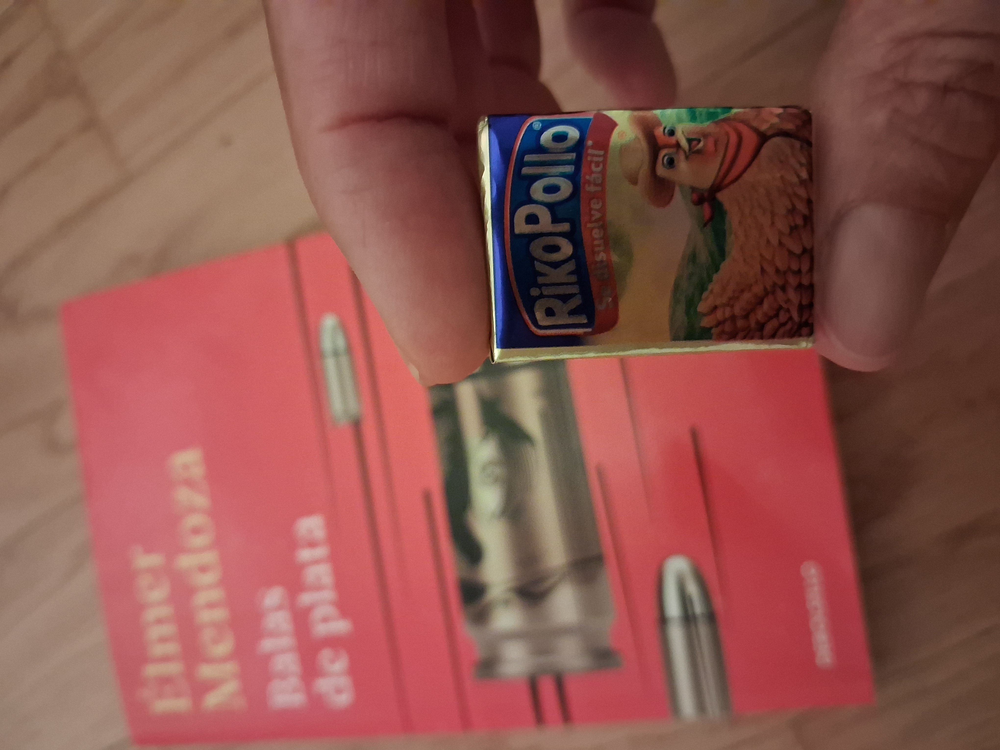

Mendoza, México y una playa vacía
1 agosto 2026

Leí Balas de plata, de Elmer Mendoza (Proiettili d'argento en la edición italiana, Silver Bullets si queréis leerlo en inglés), mientras me encontraba en México en febrero de este año, testigo involuntaria de uno de esos casos en los que los narcos se convierten en protagonistas de la escena, tal y como sucede en las novelas de Mendoza. Es más, peor aún, porque el policía de Mendoza (el «Zurdo» Mendieta) parece moverse con bastante facilidad entre el mundo del crimen y el de la policía, casi como si los narcos formaran parte de un paisaje en el que nadie los cuestiona ni espera de ellos problemas especiales, mientras que la vida real, quizá, es más difícil.
Descubrí los libros del «Zurdo» rebuscando entre las estanterías de una librería de Guadalajara, buscando un autor que me mostrara el México verdadero, el que está lejos de los resorts de lujo y de los autobuses turísticos que llevan a las ruinas mayas. Quería leer el México de los mexicanos, no el de las películas de Hollywood, y tampoco el filtrado por la lógica europea.
Lo encontré.
Lo encontré en el lenguaje denso, caótico, escrito en la frontera entre un stream of consciousness a lo Joyce y una novela policíaca seca al estilo de Agatha Christie. Lo encontré en los alimentos que se sirven en el desayuno, en el aguachile, en los pimientos fritos, en las calles donde aparecen cadáveres, en las emociones de los personajes que buscan redención y amor, en los detalles sorprendentes.
Y también, por supuesto, en el inesperado final.
Si buscáis una novela policíaca ágil, caótica e inolvidable, ¡leedla!
Para mí fue una puerta de entrada al México verdadero, violento pero también acogedor, polvoriento pero de una belleza casi estética, y en muchos casos divertido. Yo solo vi una parte infinitesimal, que quede claro: sé que México es muchísimo más que eso, pero quiero contaros mi experiencia.
Leí a Mendoza tumbada en una playa cerca de Cancún, adonde llegué después de cierto slalom entre los narcobloqueos, después de unas horas de pánico en el aeropuerto de Guadalajara y después de que un viejo mexicano me dijera que, durante dos o tres días, mi pareja y yo haríamos bien en no salir del hotel y en no hablar inglés. No sé si el viejo exageraba, pero suelo hacer caso a los viejos del lugar; normalmente saben de lo que hablan.
Antes del caos, habíamos tenido tiempo de ver un poco de ese «México verdadero» en Guadalajara: estuvimos en una boda preciosa, conocimos a la familia de una amiga muy especial, escuchamos a un grupo de mariachis (todas mujeres) tocar en un local, brindamos con los vecinos de mesa porque en México no cuesta nada hacer amistad con la gente que tienes al lado, rebuscamos entre los estantes de la librería, hablamos con la librera y encontramos los libros de Mendoza.
Después llegó el caos del que hablaba antes y nuestra rocambolesca llegada a Cancún. El viejo arrugado nos dijo que, en su opinión, en dos o tres días la situación se normalizaría, pero de momento no había autobuses hacia la zona de Playa del Carmen, la carretera estaba cerrada y solo se podía ir hacia el norte. Por suerte, el hotel que habíamos reservado estaba hacia el norte, porque en cambio otros turistas se habían quedado atrapados en el aeropuerto.
Encontramos un taxi, pagamos el triple de lo que costaba normalmente la carrera y nos llevó hasta el hotel, pasando por una carretera con bastantes puestos de control de la policía y del ejército. Consultamos la página de la Farnesina: no estaban evacuando a los italianos, así que hicimos el check-in en el hotel, que de todos modos estaba rodeado por una valla y vigilado por guardias armados, y controlaba los documentos de quienes entraban y salían.
La chica de recepción dio un respingo cuando le dijimos que veníamos de Guadalajara. Nos preguntó cómo estaba la situación en el estado de Jalisco, nos dijo que aquellas cosas normalmente no pasaban, que allí estábamos seguros, pero que nos quedáramos en el resort durante unos días.
Subimos a nuestra habitación y empezamos a guardar la ropa en el armario porque, de todos modos, si el Ministerio decide repatriarte de urgencia porque ha ocurrido un desastre, no es que te pares a recoger la ropa, así que más vale ponerse cómodos.
Además, el lugar era precioso, uno de esos sitios a los que vas una vez en la vida (al menos yo; vosotros quizá vais a menudo, afortunados, pero para mí era la primera vez) y por eso queríamos disfrutarlo bien.
Uno se va a México y le dicen: llévate dólares, porque quizá te pare la policía y tengas que pagar algo. La página de «Viaggiare Sicuri» te muestra el mapa de los lugares peligrosos, para los que recomienda «máxima precaución en los desplazamientos. Riesgo de enfrentamientos entre las fuerzas de seguridad y grupos criminales», o «zonas de especial precaución», para las que el consejo es: «No aventurarse fuera de las carreteras estatales. Respetar las costumbres locales». (Como si respetar las costumbres locales te pusiera a salvo de tiroteos, si es que hay «enfrentamientos» de esos).
Así que, bueno, sabíamos que no era buena idea andar como un pollo por los pueblos perdidos de Chiapas, ni pasearnos de noche por Ciudad de México, ni ponernos a vitorear a los zapatistas. Por eso habíamos reservado un hotel en Cancún, en una zona muy turística.
La playa del hotel era preciosa y estaba prácticamente vacía. Vacía la playa, vacío el mar frente a nosotros: hasta Cuba no se veía ni un barco, ni una lancha, ni una moto acuática, nada.
Ese vacío produce una sensación de irrealidad: pasar por carreteras con puestos de control del ejército, con la Guardia Nacional en camionetas y los fusiles preparados, y después llegar a un resort cerrado y protegido como una especie de cárcel de lujo, con una playa preciosa y vacía, no era exactamente el panorama que yo había imaginado cuando pensaba en recorrer Quintana Roo en autobuses de 15 pesos para descubrir los rincones pintorescos de México.
En cualquier caso, en aquella playa vacía abrí el libro de Mendoza y me lo leí de un tirón, levantando la vista de vez en cuando y preguntándome si todavía estaba dentro del libro, porque por la playa pasaba de vez en cuando un jeep del ejército con dos policías y dos soldados dentro. A veces bajaban, con los fusiles y todo, y daban una vuelta por los alrededores o se tomaban algo en el chiringuito; después volvían a marcharse hacia el norte y, al cabo de un rato, regresaban.
Jonathan, un chico que trabajaba de camarero para pagarse los estudios y que de vez en cuando se paraba a charlar un rato con nosotros, nos dijo que hacia el norte solo iban unos pocos kilómetros, porque más allá estaban las cabañas de los narcos, era territorio suyo. Ojo, si alquiláis un coche, no vayáis por allí, ¿eh?
Vio que estábamos leyendo en español y nos preguntó por el libro. Se sentó con nosotros y nos preguntó si nos gustaba la comida mexicana, cómo era la comida en Europa, cómo era el mar en Europa, si las ciudades eran diferentes, si se podía comprar fruta tropical o solo fruta local y cuál era nuestra comida favorita.
Después nos regaló un RikoPollo, para que probáramos uno de los sabores de su casa.
Eso es lo que debería ser viajar: probar los sabores de la casa de quien te recibe.
Para mí, Mendoza sabe a torta ahogada, enchiladas, mole, zumo de maracuyá… y RikoPollo.